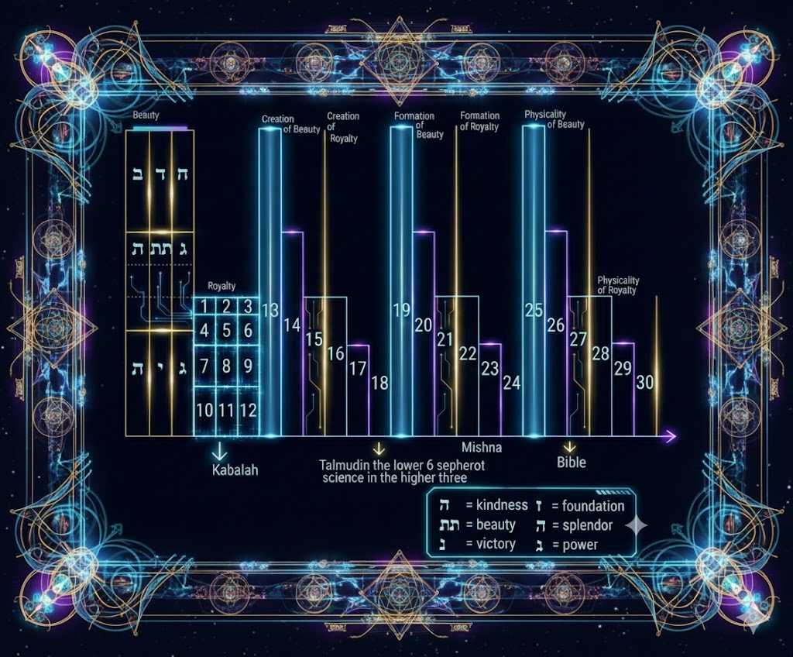

סעיף II — מבנה הידע
המבנה הספירתי של הידע
ממש כפי שהיקום הפיזי בנוי על פי האצלות האלוהיות (הספירות), כך גם נוף התורה והידע האנושי. ה"תרשים" המוזכר להלן ממפה כיצד תחומי לימוד שונים מתיישרים עם ערוצים רוחניים אלה. על ידי הבנת מבנה זה, אדם יכול לנווט בים הידע לא כאוסף אקראי של עובדות, אלא כמערכת מאוחדת של חוכמה אלוהית החיונית לתיקון הנשמה.

המפתח הבא מפענח את ההתאמה בין הספירות לבין תחומי הלימוד השונים המוצגים בתרשים לעיל. כל מספר מייצג צומת ספציפי במערך רוחני זה:
📚 חקר אינטראקטיבי: התאמת ספירות לנושאי לימוד
לחץ על כל שורה כדי לחקור כיצד כל תחום לימוד מתחבר לשורש הרוחני שלו:
8
קבלה (הזוהר)
שורש החוכמה הפנימית. ההמשך כלפי מטה זורם אל המקובלים המאוחרים יותר.
13
פילוסופיה (שיטת הרמב"ם)
מייצגת חקירה רציונלית. (הערה: הרמח"ל לא היה מסכים עם מיקום זה, ורואה בפילוסופיה דבר חיצוני).
14
ביולוגיה
חקר "החי והצומח" של היקום, המושרש בתכונה האלוהית של גיוון החיים.
15
כימיה
חומר והטרנספורמציות שלו.
16
פיזיקה
חוקי היסוד של הכוחות והאנרגיה.
17
מתמטיקה
הלוגיקה המופשטת העומדת בבסיס המציאות הפיזית.
18
תלמוד
ה"אור החיצוני". ההארה שלו ממשיכה אנכית כלפי מטה דרך המפרשים.
24
משנה
יסוד התורה שבעל פה. המשכה הוא דרך הפוסקים: הרי"ף, הרמב"ם, הרא"ש, הטור, השולחן ערוך.
27
תנ"ך
דבר האלוהים הכתוב, יסוד הכל.
28
תרגום
התרגום/הפירוש, המגשר בין לשון הקודש לאומות.
📊 הצג טבלה במבנה מקורי
| מזהה | נושא | ההקשר הרוחני |
|---|---|---|
| 8 | קבלה (הזוהר) | שורש החוכמה הפנימית. ההמשך כלפי מטה זורם אל המקובלים המאוחרים יותר. |
| 13 | פילוסופיה (שיטת הרמב"ם) | מייצגת חקירה רציונלית. (הערה: הרמח"ל לא היה מסכים עם מיקום זה, ורואה בפילוסופיה דבר חיצוני). |
| 14 | ביולוגיה | חקר "החי והצומח" של היקום, המושרש בתכונה האלוהית של גיוון החיים. |
| 15 | כימיה | חומר והטרנספורמציות שלו. |
| 16 | פיזיקה | חוקי היסוד של הכוחות והאנרגיה. |
| 17 | מתמטיקה | הלוגיקה המופשטת העומדת בבסיס המציאות הפיזית. |
| 18 | תלמוד | ה"אור החיצוני". ההארה שלו ממשיכה אנכית כלפי מטה דרך המפרשים. |
| 24 | משנה | יסוד התורה שבעל פה. המשכה הוא דרך הפוסקים: הרי"ף, הרמב"ם, הרא"ש, הטור, השולחן ערוך. |
| 27 | תנ"ך | דבר האלוהים הכתוב, יסוד הכל. |
| 28 | תרגום | התרגום/הפירוש, המגשר בין לשון הקודש לאומות. |
תוכנית הלימודים היומית
כדי לשמור על תזונה רוחנית מאוזנת, הרצוי הוא לבלוע "שיעור אחד" מכל אחת מארבע הקטגוריות העיקריות מדי יום. לדוגמה:- תנ"ך (תורה שבכתב)
- משנה/הלכה (חוק מקודד)
- תלמוד או מדע ("המשא ומתן" של החוכמה)
- קבלה (הסודות)
ספרי התפארת (זעיר אנפין)
ברמת זעיר אנפין (המידות הרגשיות הספציפיות של האל, המקושרות לעיתים קרובות ל"תפארת"), אנו מוצאים ספרייה של יצירות המאזנות בין השכל לבין הלב. הספרים הנובעים מתפארת דאצילות כוללים:- כתר: סיפורי מעשיות (סיפורי רבי נחמן) - הרמה הגבוהה ביותר, הפשוטה ביותר, אך העמוקה ביותר.
- חוכמה: תניא - הגישה השכלית לעבודת השם.
- בינה: נועם אלימלך - העומק הרגשי של הצדיקים.
- מלכות ושש המידות: ליקוטי מוהר"ן וספר המידות.
(הערה: סיווג זה תואם את השקפת הרמב"ם וחובות הלבבות על עבודת האל דרך שכל ומידות מעודנים).
†
מיפוי ספירות: הנביאים והכתובים
התרשים לעיל מפרט את ה"פיזיות" של ספירת התפארת (זעיר אנפין). במבנה מורכב זה, כל אות מתאימה לערוץ של השפעה אלוהית:
- כ (כתר): שורש חמשת חומשי תורה.
- ח, ב, ח (חוכמה, בינה, חסד): שורשי ה*נביאים*. באופן ספציפי, העמודות הימנית והשמאלית מחזיקות את הנביאים.
- ג, ת, נ (גבורה, תפארת, נצח): העמודה האמצעית מחזיקה את שורשי ה*כתובים*, כגון תהילים ומשלי.
יצירת המלכות: המבנה המשנתי
התרשים הבא ממחיש את עולם היצירה, המתאים למשנה. ששת סדרי המשנה ממפים ישירות לספירות התחתונות של עולם זה.
- זרעים, מועד, נשים: שלוש המידות האמצעיות [גבורה, תפארת, חסד] הן השורש של שלושת הסדרים הראשונים הללו.
- נזיקין, קדשים, טהרות: שלוש המידות התחתונות [נצח, הוד, יסוד] יוצרות את השורש של השלושה האחרונים.
משמעות הדבר היא שלימוד הוא מעשה של הנדסה רוחנית. על ידי לימוד המסכתות הספציפיות, אדם מושך שמות אלוהיים ספציפיים לתוך הכלים המתאימים להם:
- זרעים: מושך את האור של השם אלף אלף פלא מהכלים העליונים לתוך חסד.
- מועד: מושך את האור של אלהים לתוך גבורה.
- נשים: מושך את האור של אבג יתץ... לתוך תפארת.
- נזיקין: מושך את האור של אלא לתוך נצח.
- קדשים: מושך את האור המורכב של אלהים אלי אל אלא לתוך הוד.
- טהרות: מושך את האור של שדי (Shaddai) לתוך יסוד.

הרשת האינסופית: ארבעת עולמות הלימוד
בהבנת זאת, אנו רואים שהתלמוד אינו מונוליטי. ה"תלמוד" שאנו לומדים בדרך כלל הוא לעיתים קרובות רק תלמוד של הנפש (הרמה הנמוכה ביותר של הנשמה). זה מסביר מדוע הוא יכול לפעמים להרגיש יבש או מנותק. המטרה היא לטפס בסולם. התלמוד אינו שלם מכיוון שנשמותיהם של רבים מהאמוראים (חכמי התלמוד) היו מושרשות בתפארת דאצילות, אך הטקסט שבידינו ירד. המבנה האמיתי הוא רשת פרקטלית, שבה כל רמה קיימת בתוך כל רמה אחרת:🌍 חקר אינטראקטיבי: רשת ארבעת העולמות הפרקטלית
לחץ על כל עולם או רמת לימוד כדי לראות כיצד כל טקסט מתבטא ברחבי ארבעת העולמות הרוחניים:
אצילות
עולם הקרבה האלוהית
קבלהה"קבלה של הקבלה" (המהות הטהורה ביותר)
תלמודהלוגיקה של האלוהות
משנהמבנה האצילות
תנ"ךהדבר באצילות
בריאה
עולם הכסא/השכל
קבלהקבלה של השכל
תלמודתלמוד של תלמוד (לימוד עמק סטנדרטי)
משנהמשנה של השכל
תנ"ךתנ"ך של השכל
יצירה
עולם הרגש/הצורות
קבלהקבלה של משנה
תלמודתלמוד של משנה
משנהמשנה של משנה (חוק סטנדרטי)
תנ"ךתנ"ך של משנה
עשייה
המרחב-זמן הפיזי
קבלהקבלה של התנ"ך
תלמודתלמוד של התנ"ך
משנהמשנה של התנ"ך
תנ"ךתנ"ך של התנ"ך (קריאה פשוטה)
📊 הצג טבלה במבנה מקורי
| עולם | רמה | תוכן |
|---|---|---|
| אצילות עולם הקרבה האלוהית |
קבלה | ה"קבלה של הקבלה" (המהות הטהורה ביותר) |
| תלמוד | הלוגיקה של האלוהות | |
| משנה | מבנה האצילות | |
| תנ"ך | הדבר באצילות | |
| בריאה עולם הכסא/השכל |
קבלה | קבלה של השכל |
| תלמוד | תלמוד של תלמוד (לימוד עמק סטנדרטי) | |
| משנה | משנה של השכל | |
| תנ"ך | תנ"ך של השכל | |
| יצירה עולם הרגש/הצורות |
קבלה | קבלה של משנה |
| תלמוד | תלמוד של משנה | |
| משנה | משנה של משנה (חוק סטנדרטי) | |
| תנ"ך | תנ"ך של משנה | |
| עשייה המרחב-זמן הפיזי |
קבלה | קבלה של התנ"ך |
| תלמוד | תלמוד של התנ"ך | |
| משנה | משנה של התנ"ך | |
| תנ"ך | תנ"ך של התנ"ך (קריאה פשוטה) |